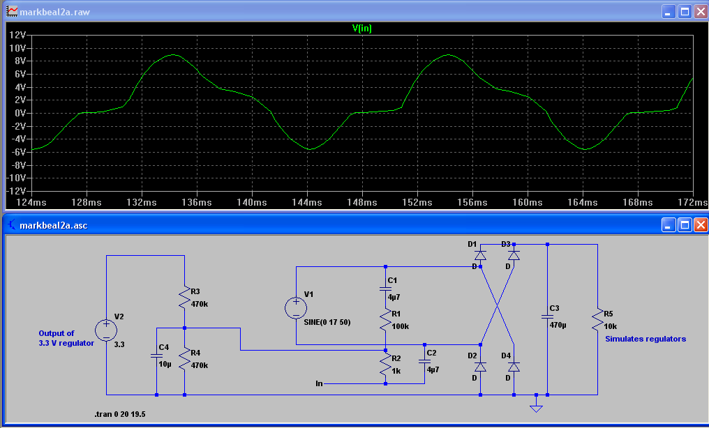

Hi
I know that can use the AC power adapter For Measuring AC Voltage.
I have a question:
Can use the one AC power adapter is being measured AC Voltage For provide power for electrical circuits ?

Thanks.
Archived Forum |
|
Can i use one AC power adapter for [Measuring AC Voltage and power supply for electric circuits] at the same timeSubmitted by tinamore on Mon, 17/08/2015 - 03:26Hi I know that can use the AC power adapter For Measuring AC Voltage. I have a question: Can use the one AC power adapter is being measured AC Voltage For provide power for electrical circuits ? Thanks.
» |
Re: Can i use one AC power adapter for [Measuring AC Voltage and power supply for electric circuits] at the same time
I think the main concern is that your rectifier circuit may tend to draw all its current near the peaks, and if large enough, that may distort the signal coming out of the transformer. For accurate power measurement you really want the V signal out of the transformer to be a scaled replica of the grid's V. Your rectifier circuit may introduce flat tops that aren't present on the primary side of the transformer.
Re: Can i use one AC power adapter for [Measuring AC Voltage and power supply for electric circuits] at the same time
So, I need to use 2 different AC power adapter ?
1. For Measuring AC Voltage
2. For rectifier circuit to The power supply for the circuit
Do not use the same at 1 adapter ?
Re: Can i use one AC power adapter for [Measuring AC Voltage and power supply for electric circuits] at the same time
For the rectifier to work as intended, its input needs to be floating (i.e. not tied to anything). In your circuit it isn't, because one of the connections to/from the processor will be the mid-rail reference supply.
Re: Can i use one AC power adapter for [Measuring AC Voltage and power supply for electric circuits] at the same time
Good question tinamore!
I found out that one transformer with a single secondary-coil didn't work on my Mk2. The Mk2 needs 5V for the circuitry and a separate AC-signal. To save on energy standby consumption, I'm currently thinking of powering the 5V circuitry with a switch mode power-supply (I have one which uses only 0.08mA standby), but that leaves the AC-signal to be sorted out.
Has anybody any ideas of how to obtain, from the mains, an undistorted AC-signal (1 - 2Vpp) using a low-consumption device? As far as I know, opto-couplers are more designed for isolating / transferring digital signals, so I was wondering whether an AC-signal could be obtained from some sort of device, which make use of magnetic fields, other than a high self-consuming transformer? For example a kind of current-clamp idea, but at micro-amp level? Some sort of Hall-sensor which can isolate & transfer AC signal to AC signal?
Hope to hear.....
Roland.
Re: Can i use one AC power adapter for [Measuring AC Voltage and power supply for electric circuits] at the same time
dBC: "I think the main concern..."
Not the main concern, but nevertheless a major concern.
Robin: "For the rectifier to work as intended, its input needs to be floating"
That's only true of a full-wave bridge rectifier. No doubt you're remembering the famous case of someone no longer active here who did just that, then confidently asserted that it all worked fine - all he needed was a tweak pot to "correct" for the massive distortion on his voltage input - despite both of us and others telling him there was a fundamental flaw in the concept. I think the thread is still on this site somewhere. In another thread (I think) I did explain how connecting the analogue zero to the ac side of the rectifier fouled everything up.
You need to look at the power supply arrangements of the emonTx V3 for the workable answer. You can only have a half-wave rectifier, and the current is deliberately restricted so as to not dent the voltage wave significantly. Simulations have been published so you can see for yourself how the voltage dips as the reservoir capacitor charges.
Roland: "Has anybody any ideas of how to obtain..."
There are many ways, but apart from an isolating transformer, none are easy, cheap and safe. You can normally have two out of the three, but you require all three together. What's wrong with using an ac adapter as a voltage monitor is it is a transformer that is not designed to produce an accurate replica of the voltage, it's more designed down to a price as an isolated power source, and for the great majority of applications that is all that is required. Do a search for "GIVMon" if you want a good and safe, but not easy, not cheap, solution.
Re: Can i use one AC power adapter for [Measuring AC Voltage and power supply for electric circuits] at the same time
Thank you Robert for your swift reply!
I just posted this question to see if there were "off the shelf" solutions to isolate / transfer AC to AC signals with a minimum of energy consumption and at low-cost. Reading you answer, there are solutions, but not so "off the shelf", not so easy and not so cheap. These days manufactures do a lot to produce low-consumption devices, of which the SMP-supply is one which replaces lots of wire-wound transformers. The wire-wound transformer does, below its saturation point, a very good job in isolating / transferring an undistorted AC signal, but very low self consuming transformers (say less than 5mA) are hard to find. It starts to look like that I have to accept the old-fashion transformer, with its higher standby consumption, as a cheap and good working AC-AC signal isolator / transfer-device.
Thanks and best regards: Roland.
Re: Can i use one AC power adapter for [Measuring AC Voltage and power supply for electric circuits] at the same time
I think you're confusing the efficiency of the SMPS as a device, vs the efficiency (or lack of) of an isolating transformer coupled with a linear regulator. The transformer in the SMPS is smaller because it works at a much higher frequency (also a reason why 400 Hz is used on aircraft!) and doesn't need to transfer a sine wave from primary to secondary, and the switching regulator followed up by a filter (also small and cheap because of the frequency) is the main contribution to efficiency.
As a matter of interest, what power does your 5 mA represent (i.e. what is the power factor of your essentially unloaded transformer)?
Re: Can i use one AC power adapter for [Measuring AC Voltage and power supply for electric circuits] at the same time
Tinamore: I've found it!
About 2/3 of the way down this thread http://openenergymonitor.org/emon/node/309 is what was proposed long ago; and I think it is very much what you propose now. And a few posts later is the result of my simulation.
Near the bottom of this thread someone misguidedly tried again, with predictably disastrous results.
This is the circuit that was proposed, redrawn below for the simulation but otherwise exactly the same, and the shape of the voltage input wave. It is intended to be a 3 V peak-peak sine wave centred on 1.65 V. You can see why that circuit was not a good idea:

V1 is the transformer secondary winding. It connects to the bridge rectifier D1-D4 and the smoothed and regulated output reappears on the left as V2. The monitoring circuit is the voltage divider R1, R2 and non-polarised capacitors C1, C2 were added in the hope of isolating the monitoring section from the dc side. As you can see from the waveform, it doesn't work.
Re: Can i use one AC power adapter for [Measuring AC Voltage and power supply for electric circuits] at the same time
Hello Robert;
Not 100% sure whether I understand your question correct, but if you mean what the transformer standby power- consumption is compared to the circuitry power-consumption; the circuitry uses 12mA@5VDC = 0.06W. My current transformer uses, unloaded, 13mA@240VAC= 3.12W. That's a "power-factor" of 1: 52 :-(
So a 5mA transformer would be a help, but its own consumption will still be well above that of the circuitry. My current transformer has 2x6Vrms secondary coils. One coil feeds, via a rectifier & a 5VDC regulator, the circuitry. The other secondary coil supplies, via a Voltage divider (total resistance 110kΩ), the AC Voltage-signal. As said, I do have a 5VDC SMP-supply with an unloaded consumption of 0.08mA@240V = 0.019W, but that one, as you also explained, doesn't give me the required AC voltage signal. One could say that by using my current 2x6Vrms transformer, the AC Voltage signal comes at a "great" additional power cost. Hence the reason for posting my question.
Best regards: Roland.
Re: Can i use one AC power adapter for [Measuring AC Voltage and power supply for electric circuits] at the same time
I meant power factor as a property of a load on an ac system. 13 mA @ 240 V = 3.12 VA; it's not necessarily, and probably won't be, 3.12 W but rather less. Power factor is the ratio of real power to apparent power, and is equal to 1 for a purely resistive load and reduces to zero for a purely reactive load. Your unloaded transformer (unloaded because the current drawn by the divider is insignificant compared with the transformer magnetising current) will be somewhere in between, so my guess is the real power, which is what you pay for, will be around 2 W or maybe less.
I'm afraid you're doing all the wrong sums for the SMPS also because the product of the current you're measuring and the voltage is unlikely to be real power for that either (but if it's a good one, it will be closer).
Re: Can i use one AC power adapter for [Measuring AC Voltage and power supply for electric circuits] at the same time
Hello Robert;
Yes, reading your comment, it reminds me again, and you are absolutely right. I measured the apparent power and the real power could be less, maybe indeed around 2W. Another lesson (re-)learned! I'm not sure how to measure, or calculate the power-factor, so that would be another reason to go back to my study books. To put all minds to rest, I will stick for the time being to my 2x6V transformer, as it does its job well and it's save to use ;-)
Back to the study books......
Best regards: Roland.
Re: Can i use one AC power adapter for [Measuring AC Voltage and power supply for electric circuits] at the same time
"I'm not sure how to measure, or calculate the power-factor"
I've told you that, and there's some more in Building Blocks! But we've gone way off-topic here. If you want to discuss that, please start a new thread.